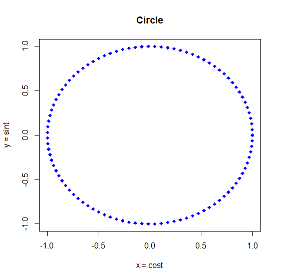

প্রথমে দেখে মনে হবে এ আর এমন কী? একঘেঁয়ে এক জোড়া সমীকরণ। অথচ চিন্তাটা কত অসাধারণ! কেন অসাধারণ তা দেখার আগে একটা-দুইটা উদাহরণ দেখে নিলে মন্দ হয় না। আপাতত আমরা খুবই সাধারণ একটা উদাহরণ দেখব।
ধরুন, আমাদের কাছে খুবই সরল একটা সমীকরণ আছে। $y = +25 $।
একে প্যারামেট্রিক রূপ দেওয়া যাক। বিস্তারিত বলার আগে আপাতত এটা বলে রাখি, প্যারামেট্রিক সমীকরণে আমরা দুটো চলকের (Variable) সম্পর্ককে তৃতীয় অন্য আরেকটি চলক দিয়ে (সাধারণত যাকে t দিয়ে প্রকাশ করা হয়) প্রকাশ করি।
প্যারামেট্রিক করতে ধরি, \(t = \frac{x}{2}\)। অবশ্যই আপনি অন্য কিছুও ধরতে পারতেন। এখানে থেকে, \(x =2 \times t\)।
তাহলে, $y = +25 = t+25 $
অতএব, $y = +25 $ সমীকরণকে প্যারামেট্রিক করে আমরা দুটো সমীকরণ পেলাম।
- $x=2t $
- $y = t +25 $
আমরা আরও কিছু উদাহরণ দেখব। তবে তার আগে একটু চিন্তা করি, কী লাভ হয় প্যারামেট্রিক সমীকরণ দিয়ে?
$y = + 25 $ সমীকরণটা নিয়ে আবার চিন্তা করি। এটা দিয়ে \(x\) ও \(y\) এর সম্পর্ক বোঝানো হয়েছে। যেখানে \(y\) নির্ভর করছে \(x\) এর ওপর। এই সম্পর্ক নানান রকমের হতে পারে। আপাতত আমরা ধরে নিচ্ছি এখানে \(x\) দ্বারা বোঝাচ্ছে একটি অফিসের জন্যে প্রতিদিন কয়টি কলম কেনা হচ্ছে। আর \(y\) দ্বারা বোঝাচ্ছে কত পেইজ কাগজ লাগছে।
তাহলে, ১০টা কলম কিনলে কাগজ কেনা হবে \(y=\frac{10}{2} + 25\)। মানে ৩০ পেইজ।
আপাত দৃষ্টিতে দেখা যাচ্ছে, কাগজের সংখ্যা কলমের সংখ্যার ওপর নির্ভর করছে। অথচ বাস্তবে সেটা নাও হতে পারে।
হতে পারে কোনটা কতটা কেনা হবে সেটা নির্ভর করছে ঐদিন অফিসে কত জন মানুষ লেখালেখি বিষয়ক কাজ করছে তার ওপর। এই সংখ্যাকে আমরা \(t\) দিয়ে প্রকাশ করতে পারি। আমরা একটু আগেই \(t\) এর সাথে \(x\) ও \(y\) এর সম্পর্ক বের করেছি। তাহলে ধরা যাক, কোনো একদিন ঐ অফিসে ৩০ জন মানুষ কাগজে লেখালেখি করবে।
তাহলে, মোট কলম লাগবে, \(x=2t\) বা \(2 \times 30\), মানে ৬০টি।
আর কাগজ লাগবে \(y= t +25 = 30 + 25 = 65\)। মানে কাগজ লাগবে ৬৫ পেইজ।
তাহলে আমরা দেখলাম, আসলে কয়টি কলম বা কত পেইজ কাগজ কেনা হবে সেটা আসলে নির্ভর করছে তৃতীয় আরেকটি চলকের ওপর। কাগজ ও কলমের সংখ্যা একে অপরের ওপর নির্ভর নাও করতে পারে। এখানেই প্যারামেট্রিক সমীকরণের কারিশমা।
এছাড়াও উচ্চতর নানান অ্যানালাইসিসে সমীকরণকে প্যারামেট্রিক করে নিলে কাজ করতে সুবিধা হয়।
এবার আরেকটা উদাহরণ দেখা যাক।
\[x^2+y^2=16\]
এটাকে আমরা চাইলে \(t=x^2\) ধরেও প্যারামেট্রিক করতে পারি। সেক্ষেত্রে সমীকরণ দুটো হবে এমন-
- \(x=\sqrt{t}\)
- \(y=\sqrt{16-t}\)
এছাড়া আপনি অন্য যে-কোনো কিছু ধরেও করতে পারেন। তবে কখনও কখনও বিশেষ কিছু উপায়ে করলে সমীকরণের মানে বোঝা সহজ হয়।
ত্রিকোণমিতি থেকে আমরা জানি, \(sin^2t+cos^2=1\)
এখানে আমরা কোণের জন্যে \(\theta\) এর বদলে \(t\) ব্যবহার করলাম। যেহেতু প্যারামেট্রিক সমীকরণে সাধারণত \(t\) ব্যবহার করা হয়।
এখন আমরা চাইলে \(x^2+y^2=16\) কে \(sin^2t+cos^2=1\) এর মতো রূপ দিতে পারি। এভাবে-
\[\frac{x^2}{16}+\frac{y^2}{16} = 1 \] এটা থেকে- \[(\frac{x}{4})^2 + (\frac{y}{4})^2=1\]
এটাকে এখন \(sin^2t+cos^2=1\) এর মতো দেখাচ্ছে। তাহলে আমরা লিখতে পারি,
\(\frac{x}{4}=sint\) এবং \(\frac{y}{4}=cost\)
মানে,
- \(x=4 \space sint\)
- \(y=4 \space cost\)
দেখেই বোঝা যাচ্ছে, এটা ৪ একক ব্যাসার্ধের একটি বৃত্ত। এখানে ৪ এর জায়গায় ১ থাকলে এটা হত একক বৃত্ত (unit circle)। মানে ব্যাসার্ধ ১ এককের বৃত্ত।
দুই জায়গায়ই ৪ না হয়ে কম বেশি হলে এটা হয়ে যেত উপবৃত্তের (ellipse) সমীকরণ। যেমন
- \(x=3 \space cost\)
- \(y=2 \space sint\)
আমরা দুটি চিত্রই এঁকে দেখতে পারি। আঁকব অবশ্যই R দিয়ে।
প্রথমে উপবৃত্ত দেখা যাক।
t <- seq(0, 2*pi, length.out = 100)
x <- 3*cos(t)
y <- 2*sin(t)
plot(x,y, pch = 18, col = 'blue', ylim=c(-3,3), main = "Ellipse",
xlab="x = 3cost", ylab = "y = 2sint") |
| চিত্র-০১ঃ প্যারামেট্রিক সমীকরণ থেকে আঁকা উপবৃত্ত |
এবার তাহলে বৃত্তটাও এঁকে ফেলি।
t <- seq(0, 2*pi, length.out = 100)
x <- cos(t)
y <- sin(t)
plot(x,y, pch = 18, col = 'blue', main = "Circle",
xlab="x = cost", ylab = "y = sint") |
| চিত্র-০২ঃ প্যারামেট্রিক সমীকরণ থেকে আঁকা বৃত্ত |
বলাই বাহুল্য, এভাবে আঁকাআঁকির জন্যে প্যারামেট্রিক সমীকরণ ব্যবহার না করলে মুশকিলে পড়তে হয় অনেক সময়।
এর আগে একটি লেখায় আমরা দারুণ দারুণ নকশার ডিজাইন দেখেছিলাম। ওখানেও কিন্তু প্যারামেট্রিক সমীকরণ কাজে লাগানো হয়েছিল।
এভাবেই প্যারামেট্রিক সমীকরণ আমাদের জীবনকে সহজ করে তোলে। নান্দনিকও কি নয়? (কী নান্দনিক, তাই না?)। এমন সুন্দর সুন্দর ডিজাইন তো সে কথাই বলে। পাশাপাশি আমাদেরকে ভিন্ন দৃষ্টিকোণ থেকে চিন্তা করতে শেখায়।
সূত্র ১। বেটার এক্সপ্লেইন্ড ২। খান অ্যাকাডেমি ৩। Straighter Line ৪। MrsDobbsMath ৫। উইকিপিডিয়া